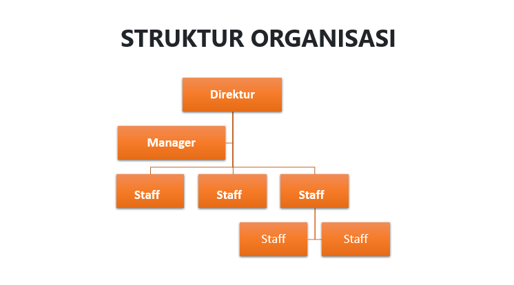
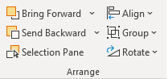
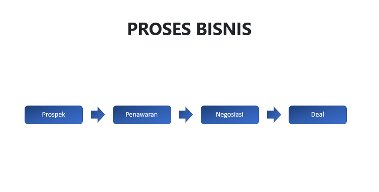
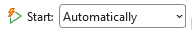
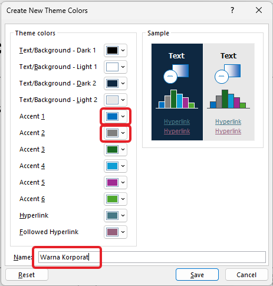

Materi Lengkap
Langkah Praktik:
- Buka PowerPoint → pilih Blank Presentation.
- Pilih tema: Tab Design → pilih salah satu tema (misal: Ion, Retrospect, atau Frame).
-
Slide 1 — Cover:
- "Click to add title" ketik: "PRESENTASI DIRI" (font besar 44 pt).
- Klik Insert → Pictures → This Device.
- Atur foto: klik 2x pada Foto → Picture Format → Crop → Crop to Shape → pilih Oval.
-
Slide 2 — Pendidikan & Pengalaman:
- Klik tab Home.
- Klik New Slide.
- Pilih layout Two Content.
- Kotak judul di atas.
- Kotak isi di tengah.
-
Slide 3 — Hobi & Minat:
- Klik Home → New Slide.
- Pilih layout Title and Content → judul: "Hobi & Minat".
-
Tambahkan Ikon:
- Klik Insert → Icons.
-
Pada kotak pencarian, cari:
- Music
- Sport
- Book
- Pilih beberapa ikon.
- Klik Insert.
-
Gunakan Text Box di bawah masing-masing ikon.
-
Musik
Mendengarkan musik
untuk hiburan dan relaksasi. -
Olahraga
Bermain badminton
untuk menjaga kesehatan. -
Membaca
Membaca buku teknologi
dan pengembangan diri.
-
Musik
- Simpan file: File → Save As → beri nama Presentasi_Diri.pptx.
-
Hasil:


Bagian 1 — Struktur Organisasi (SmartArt
Hierarchy)


- Layout → Title Only → judul: STRUKTUR ORGANISASI.
- Tab Insert → SmartArt → pilih Hierarchy → pilih Organization Chart.
- Klik kotak paling atas → ketik: Direktur.
- Klik kotak level 2 → ketik: Manager. Ulangi untuk manager kedua.
- Klik kotak level 3 → ketik: Staff untuk masing-masing manager.
- Jika ingin menambah kotak: klik kanan pada kotak → Add Shape → pilih Add Shape Below atau Add Assistant.
- Jika ingin ubah warna: Tab SmartArt Design → Change Colors → pilih skema warna.
-
Jika ingin ubah Tema: Tab SmartArt Styles → pilih tema
warna.
Hasil:
- Buat slide baru: klik panah kecil New Slide → Title Only → judul: PROSES BISNIS.
- Tab Insert → Shapes → pilih Rectangle: Rounded Corners.
- Gambar 4 kotak secara horizontal beri jarak.
- Klik kanan masing-masing → Edit Text → ketik: PROSPEK, PENAWARAN, NEGOSIASI, DEAL.
- Insert → Shapes → pilih Arrow (Right) → gambar panah dari kotak 1 ke 2, 2 ke 3, 3 ke 4.
-
Blok semua shapes + panah → Tab
Shape Format →
Align →
Align Middle, lalu
Distribute Horizontally agar
jarak antar kotak sama rata.

-
Ubah warna shapes: Shape Fill → Gradient
pilih warna biru gradasi.
Hasil:


- Buat slide baru: klik panah kecil New Slide → Title Only → judul: SIKLUS PENJUALAN.
- Insert → SmartArt → pilih Cycle → Basic Cycle atau Continuous Cycle.
- Ketik teks di masing-masing lingkaran: Prospek, Penawaran, Negosiasi, Deal.
-
Ubah warna dan gaya dari tab
SmartArt Design.
Hasil:
- Tentukan skema warna korporat (misal: biru #005A9E + abu #F2F2F2).
-
Slide 1 — Cover:
- Judul: "Nama Perusahaan".
- Subtitle: "Profil Perusahaan 2025".
- Insert → Pictures → logo perusahaan (atau buat dengan Shapes + Text Box).
- Atur tata letak: logo di kiri, teks di kanan.
-
Slide 2 — Visi & Misi:
- Judul: "Visi & Misi".
- Visi: 1 kalimat tebal di tengah.
- Misi: 3-5 bullet point.
- Gunakan ikon (Insert → Icons) untuk mempercantik.
-
Slide 3 — Struktur Organisasi
(SmartArt):
- Insert → SmartArt → Hierarchy → Organization Chart.
- Isi: Direktur Utama → Manager → Staff.
- Ubah warna sesuai tema korporat.
-
Slide 4 — Produk & Layanan:
- Gunakan layout 2 kolom atau grid shapes.
- Setiap produk: ikon + nama + deskripsi singkat.
-
Slide 5 — Penutup:
- "Terima Kasih" besar di tengah.
- Kontak: Email, Telepon, Website.
- Sosial media: ikon Instagram, LinkedIn, dll.
-
Menerapkan tema kustom: Tab
Design →
Variants → sesuaikan warna
(Colors → Customize Colors) dan font.
Hasil:


Langkah Praktik:
- Buka PowerPoint → Blank Presentation.
-
Sisipkan gambar:
-
Tab Insert →
Pictures →
This Device → pilih file
gambar.
Contoh gambar:
Klik gambar → Tab
Picture Format →
Remove Background.
-
Tab Insert →
Pictures →
This Device → pilih file
gambar.
- PowerPoint akan mendeteksi latar belakang secara otomatis (warna ungu = area yang akan dihapus).
- Jika ada area yang salah deteksi: gunakan Mark Areas to Keep atau Mark Areas to Remove.
- Tips: Zoom in (Ctrl + scroll) untuk marking yang lebih presisi.
- Klik Keep Changes → latar belakang gambar hilang.
-
Crop gambar menjadi bentuk circle:
-
Klik gambar → Tab
Picture Format →
Crop →
Crop to Shape.

- Pilih Oval (dalam kategori Basic Shapes).
- Klik kembali Crop → pilih Aspect Ratio → 1:1 (Square).
- Sesuaikan posisi crop dengan drag handle.
- Tekan Enter atau klik di luar gambar untuk selesai.
-
Klik gambar → Tab
Picture Format →
Crop →
Crop to Shape.
-
Atur posisi dan ukuran:
- Klik gambar → drag sudut untuk mengubah ukuran (tahan Ctrl agar proporsional).
- Drag gambar untuk memindahkan posisi.
-
Tambahkan efek gambar (opsional):
- Tab Picture Format → Picture Border → beri border putih.
- Picture Effects → Shadow → pilih efek bayangan.
-
Buat struktur slide:
- Slide 1: Menu Utama
- Slide 2: Bab 1 — Pendahuluan
- Slide 3: Bab 2 — Materi
- Slide 4: Bab 3 — Kesimpulan
- Slide 5: Video
-
Slide 1 — Menu Utama:
- Judul: "Menu Presentasi".
- Buat 3 teks: "Bab 1", "Bab 2", "Bab 3".
- Blok teks "Bab 1" → Klik kanan → Hyperlink (atau Ctrl+K).
- Pilih Place in This Document → pilih Slide 2 (Bab 1) → OK.
- Ulangi untuk "Bab 2" → Slide 3, "Bab 3" → Slide 4.
-
Tambahkan Action Button "Kembali" di setiap
slide:
- Buka Slide 2 (Bab 1).
- Tab Insert → Shapes → Action Buttons → pilih Action Button: Home (ikon rumah).
- Gambar di pojok kanan bawah.
- Di dialog yang muncul: pilih Hyperlink to → First Slide atau Slide… → pilih Slide 1.
- Klik OK.
- Copy-paste action button ke Slide 3, 4, dan 5.
-
Tambahkan video dari YouTube:
- Buka Slide 5 → judul: "Video".
- Tab Insert → Video → Online Video.
- Paste URL YouTube (atau cari "Embed Code" dari YouTube).
- Klik Insert → video akan muncul di slide.
- Alternatif: Jika Online Video gagal, gunakan Insert → Video → This Device dengan file video .mp4 yang sudah di-download.
- Atur ukuran dan posisi video.
-
Set video play otomatis: Tab
Playback →
Start →
Automatically.

- Uji coba: Tekan F5 (Slide Show) → klik "Bab 1" → navigasi → klik Action Button kembali → coba video.
- Buat slide baru → judul: "Proses Bisnis — Animasi".
-
Buat objek di slide:
- Buat 4 kotak (Insert → Shapes → Rounded Rectangle) secara horizontal berjauhan.
- Isi teks: Prospek, Penawaran, Negosiasi, Deal.
- Format warna: biru muda, border biru tua.
- Buat 3 panah (Insert → Shapes → Arrow: Right) di antara kotak.
-
Tambahkan animasi Entrance (Fade):
- Klik kotak "Prospek" → Tab Animations → pilih Fade.
- Klik panah setelah "Prospek" → pilih Fade.
- Klik kotak "Penawaran" → pilih Fade.
- Ulangi untuk semua objek secara berurutan.
-
Atur timing animasi:
- Buka Animation Pane (Tab Animations → Animation Pane).
- Klik panah bawah pada masing-masing animasi di panel → atur:
- "Prospek" → Start: On Click (muncul saat klik).
- Panah 1 → Start: After Previous (otomatis setelah Prospek).
- "Penawaran" → Start: With Previous (bersamaan dengan panah 1).
- Panah 2 → Start: After Previous.
- "Negosiasi" → Start: With Previous.
- Panah 3 → Start: After Previous.
- "Deal" → Start: With Previous.
-
Tambahkan Emphasis (Grow) pada "Deal":
- Klik kotak "Deal" → Tab Animations → Add Animation.
- Pilih Grow/Shrink (dalam Emphasis).
- Atur Start: With Previous, Duration: 1s.
-
Tambahkan Motion Path pada "Prospek"
(opsional):
- Klik "Prospek" → Add Animation → Motion Paths → Lines.
- Drag garis hijau (start) ke posisi awal, garis merah (end) ke posisi akhir.
- Atur Start: With Previous, Duration: 2s.
- Uji coba: Tekan F5 → klik sekali → animasi berjalan otomatis berurutan.
Langkah Praktik:
Panduan visual:
Pertemuan 3 belum dilengkapi tangkapan layar. Gunakan
petunjuk teks di bawah dan contoh file yang bisa diunduh
sebagai referensi. Jika ragu dengan posisi tombol, lihat
kembali tangkapan layar dari Pertemuan 1–2 yang menunjukkan
tata letak ribbon PowerPoint.
- Buka PowerPoint → Blank Presentation.
- Buat 4 slide: Klik kanan di slide panel → New Slide (ulangi 3 kali).
- Isi tiap slide dengan judul berbeda: "Slide 1 — Fade", "Slide 2 — Push", "Slide 3 — Wipe", "Slide 4 — Morph".
-
Terapkan transisi:
- Klik Slide 1 → Tab Transitions → pilih Fade.
- Klik Slide 2 → pilih Push.
- Klik Slide 3 → pilih Wipe.
- Klik Slide 4 → pilih Morph.
-
Atur durasi transisi:
- Di tab Transitions, pada grup Timing:
- Duration: ketik 2 (atau gunakan tombol spinner atas/bawah hingga muncul 02.00).
- Ulangi untuk masing-masing slide.
-
Atur auto-advance:
- Pada grup Timing, centang After → ketik 3 (PowerPoint otomatis mengonversi ke 00:03.00).
- Penting: Di PowerPoint 2024, centang On Mouse Click dan After bisa aktif bersamaan. Slide akan maju otomatis setelah 3 detik, tetapi tetap bisa diklik manual kapan saja.
- Ulangi untuk semua slide.
- Jalankan slide show (F5) → slide akan berganti otomatis setiap 3 detik.
-
Buat Slide 1:
- Hapus semua placeholder default.
- Insert → Text Box → ketik: "IDE".
- Font: Arial Black, size 96 pt, warna biru tua.
- Posisikan di pojok kiri slide.
-
Duplikat Slide 1 menjadi Slide 2:
- Klik kanan Slide 1 di panel → Duplicate Slide.
-
Edit Slide 2:
- Pindahkan teks "IDE" ke pojok kanan atas.
- Ubah ukuran font menjadi 36 pt.
- Tambahkan Text Box baru dengan deskripsi: "Sebuah gagasan yang mengubah dunia".
- Font deskripsi: 20 pt, warna abu-abu.
- Tambahkan gambar ilustrasi (Insert → Pictures) di tengah slide.
-
Terapkan Morph transition pada Slide 2:
- Klik Slide 2 → Tab Transitions → pilih Morph.
- Durasi: set 2 (atau gunakan spinner hingga 02.00).
- Uji coba: Tekan F5 → klik ke Slide 2 → teks "IDE" akan bergerak mulus dari kiri ke kanan sambil mengecil, sementara deskripsi dan gambar muncul.
Mengapa Morph
berhasil? Morph membaca objek yang memiliki
nama sama di kedua slide. Karena kita
menduplikat Slide 1, teks "IDE" di
Slide 2 memiliki nama objek yang identik. Jika membuat
dari slide baru (bukan duplikat), Morph tidak akan
bekerja — pastikan selalu duplikat slide untuk efek
Morph objek yang sama.
-
Buka Slide Master:
-
Tab View →
Slide Master.

- Slide Master adalah slide paling atas di panel kiri.
-
Tab View →
Slide Master.
-
Tambahkan logo di semua slide:
- Pilih slide paling atas (Slide Master).
- Insert → Pictures → pilih logo perusahaan.
- Posisikan di kanan atas slide master.
- Atur ukuran logo (jangan terlalu besar).
-
Logo akan muncul di semua slide yang
menggunakan layout di bawahnya.

-
Kustomisasi warna korporat:
- Tab Slide Master → Colors → Customize Colors.
- Isi:
- Accent 1: Biru (#005A9E)
- Accent 2: Abu-abu (#F2F2F2)
-
Beri nama: "Warna Korporat" →
Save.

-
Atur font korporat:
- Tab Slide Master → Fonts → Customize Fonts.
- Heading: Calibri Light.
- Body: Calibri.
- Beri nama: "Font Korporat" → Save.
-
Buat layout kustom "Judul + Gambar
Kiri":
- Di panel Slide Master, klik Insert Layout (atau kanan → Insert Layout).
- Klik kanan layout baru → Rename Layout → ketik: "Judul + Gambar Kiri".
- Tab Slide Master → Insert Placeholder → pilih Picture → gambar di sisi kiri layout.
- Insert Placeholder → Title → tempatkan di kanan atas.
- Insert Placeholder → Text → tempatkan di kanan bawah.
- Catatan: Tombol Insert Placeholder hanya muncul saat Anda berada di Slide Master view (tab Slide Master → grup Master Layout), bukan di menu Insert biasa.
- Keluar dari Slide Master: Klik Close Master View.
-
Simpan sebagai template:
- File → Save As.
- Pilih file type: PowerPoint Template (*.potx).
- Beri nama: "Template_Korporat.potx".
- Template siap digunakan untuk presentasi selanjutnya.
Langkah Praktik:
-
Buat 5 slide presentasi produk:
- Slide 1: Cover — Nama Produk + Tagline.
- Slide 2: Fitur Utama — 3 fitur dengan ikon.
- Slide 3: Manfaat — bullet point manfaat produk.
- Slide 4: Testimoni — quote pelanggan.
- Slide 5: Call to Action — kontak + harga.
-
Tambahkan Speaker Notes:
- Klik Notes di bagian bawah slide (atau View → Notes Page).
- Ketik skrip presentasi di notes tiap slide.
-
Gunakan Presenter View:
- Tekan Alt+F5 (atau Slide Show → Presenter View).
- Layar presenter: menampilkan slide, notes preview, timer, dan slide berikutnya.
- Pastikan proyektor/layar kedua terhubung untuk hasil optimal.
-
Latih Rehearsal Timing:
- Tab Slide Show → Rehearse Timings.
- PowerPoint akan merekam waktu tiap slide.
- Presentasikan seperti biasa → klik next untuk berpindah slide.
- Setelah selesai, PowerPoint menanyakan: "Keep the slide timings?" → pilih Yes.
- Sesuaikan agar total waktu mendekati 3 menit.
- Tekan F5 → slide show akan berjalan otomatis sesuai timing yang direkam.
- Buat 7 slide dengan struktur berikut:
| Slide | Judul | Konten |
|---|---|---|
| 1 | Cover | Nama startup + tagline + nama presenter |
| 2 | Masalah & Solusi | Problem statement + solusi yang ditawarkan |
| 3 | Produk | Gambar produk, fitur utama |
| 4 | Market Size | Grafik/chart potensi pasar (Insert → Chart) |
| 5 | Business Model | Bagaimana menghasilkan uang, harga, margin |
| 6 | Tim | SmartArt Hierarchy atau Picture Layout |
| 7 | Call to Action | Yang diinginkan (investasi/kerjasama) + kontak |
- Terapkan tema yang profesional dan konsisten (Design → pilih tema, misal: Ion atau Banded).
- Gunakan Morph transisi antar slide: Terapkan Morph pada Slide 2-7 (Transitions → Morph).
-
Tambahkan animasi Entrance (Fade):
- Pilih judul slide → Animations → Fade (Start: After Previous).
- Pilih konten slide → Animations → Fade (Start: After Previous).
- Ulangi untuk semua slide agar elemen muncul otomatis.
-
Slide 4 — Market Size:
- Tab Insert → Chart → pilih Bar atau Pie.
- PowerPoint akan membuka jendela Excel kecil — ketik data pasar Anda, lalu tutup Excel.
- Format chart agar sesuai tema warna.
-
Slide 6 — Tim:
- Insert → SmartArt → Picture → Picture Organization Chart atau Circle Picture.
- Klik ikon kamera di SmartArt → pilih foto tim.
- Ketik nama dan jabatan.
Ini adalah final project yang menggabungkan seluruh materi Pertemuan 1-4.
-
Buat template kustom (Slide Master) — rujuk
Pertemuan 3:
- Buka Slide Master (View → Slide Master).
- Tambahkan logo di slide master.
- Kustomisasi warna dan font korporat.
- Buat layout "Judul + Gambar Kiri" jika diperlukan.
- Close Master View.
-
Buat 7 slide dengan konten pilihan bebas
(profil perusahaan, produk, project sekolah,
dll):
- Slide 1: Cover — judul + subtitle + logo.
- Slide 2: Daftar Isi / Menu — dengan hyperlink ke slide masing-masing.
- Slide 3: Isi 1 — teks + gambar.
- Slide 4: Isi 2 — chart/grafik/data.
- Slide 5: Isi 3 — video (Insert → Video).
- Slide 6: Isi 4 — SmartArt / diagram.
- Slide 7: Penutup — Call to Action + kontak.
-
Hyperlink navigasi (rujuk Pertemuan 2):
- Di Slide 2 (Daftar Isi), buat hyperlink masing-masing item ke slide tujuan.
- Tambahkan Action Button "Kembali ke Menu" di setiap slide (kecuali Cover).
-
Morph transisi: Terapkan Morph di
semua slide (kecuali mungkin slide 1 → 2).
Tips: duplikat slide sebelumnya, ubah posisi objek, lalu terapkan Morph untuk efek sinematik. -
Animasi Entrance:
- Judul: Fade, Start: After Previous.
- Konten: Fade, Start: After Previous (agar muncul otomatis).
- Gambar: Float In atau Zoom, Start: With Previous.
-
Record Slide Show:
- Tab Slide Show → Record Slide Show.
- Pilih Record from Beginning.
- Bicara menjelaskan tiap slide + klik navigasi.
- Setelah selesai, klik Close → rekaman tersimpan di slide.
- Ikon speaker muncul di tiap slide yang direkam.
-
Presentasikan dengan Presenter View:
- Tekan Alt+F5 untuk Presenter View.
- Gunakan notes untuk panduan bicara.
- Gunakan pointer/pen (Ctrl+P) untuk menandai slide.
- Tekan B untuk layar hitam, W untuk layar putih (saat diskusi).
-
Export sebagai video (opsional):
- File → Export → Create a Video.
- Pilih kualitas: Full HD (1080p).
- Atur timing tiap slide (default 5 detik).
- Klik Create Video → simpan sebagai .mp4.
Kriteria Penilaian Final Project:
- Template kustom (Slide Master) — 20%
- Konten & tata letak — 20%
- Animasi & Transisi (Morph) — 20%
- Hyperlink & Navigasi interaktif — 15%
- Media (gambar/video) — 10%
- Teknik presentasi (Presenter View + Record) — 15%